|
I am a Research Master's student with emphasis in Artificial Intelligence and Robotics advised by Liam Paull in Robotics and Embodied AI Lab (REAL) at Université de Montréal and MILA. Previously, I obtained a Postgraduate Diploma in Artificial Intelligence and a BEng degree as a Mechatronics Engineer from Universidad Autonoma de Occidente (UAO) in Cali, Colombia. During the BEng degree, I worked under the supervision of Victor Romero-Cano on different areas such as object detection and tracking, mobile robotics, sensor fusion and deep neural networks. My undergraduate degree project was entitled "Autonomous landing system for an unmanned aerial vehicle on a terrestrial vehicle" and consisted in the development of the vision and control pipelines to autonomously land a UAV on a ground vehicle. Over the past two years, my research has been focused on areas such as Reinforcement Learning, Bayesian Inference, Object Detection, and the application of AI in robotics-vision applications. Formerly I worked as a Machine Learning Engineer at Whale & Jaguar (NLP) and as an R&D Robotics Software Engineer at Romero Cano Ingenieria (Robotics vision, Multi-modal sensor fusion, AI, and UAVs.) miguel [dot] angel [dot] saavedra [dot] ruiz [at] umontreal [dot] ca |
|
I am broadly interested in the areas of Robotics vision, Self-Supervised Representation Learning, Computer vision, SLAM, Graphical Models, Uncertainty Estimation, Reinforcement Learning, Graphical models. Most of my work is motivated by the following question: "How can robotic agents be endowed with environmental awareness to start perceiving their surroundings accurately and reliably and thus, enhance their decision-making capabilities?" |
|
|
|
|
||
|
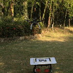
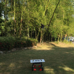
|
Miguel Saavedra-Ruiz, Ana Pinto, Victor Romero-Cano IEEE Aerospace And Electronic Systems , 2021 (Journal publication)
code /
poster /
thesis /
arXiv /
video /
bibtex
@ARTICLE{9656574,
author={Saavedra-Ruiz, Miguel and Pinto-Vargas, Ana Maria and Romero-Cano, Victor},
journal={IEEE Aerospace and Electronic Systems Magazine},
title={Monocular Visual Autonomous Landing System for Quadcopter Drones using Software in the Loop},
year={2021},
volume={},
number={},
pages={1-1},
doi={10.1109/MAES.2021.3115208}}
Autonomous landing system for a UAV on a terrestrial vehicle using robotics vision and control.
My BEng degree project addressed the problem of the autonomous landing of a UAV
with a landing platform located on the top of a ground vehicle. The project
utilized vision-based techniques to detect the landing platform, a Kalman
filter was tailored for the tracking phase and finally, a PID controller sent
control commands to the flight controller of the UAV to land properly on the
platform. Rigorous assessments were conducted through the simulation of the
whole robotic stack with ROS and gazebo in the software in the loop provided by
PX4. Ultimately, the system was tested in a custom DJI F-450 and embedded in a
Odroid XU4. The system demonstrates a satisfactory performance and was able to
land with a mean error of ten centimeters from the center of the landing
platform (Implemented in Python, C++/Linux).
Autonomous landing is a capability that is essential to achieve the full potential
of multi-rotor drones in many social and industrial applications. The implementation
and testing of this capability on physical platforms is risky and resource-intensive;
hence, in order to ensure both a sound design process and a safe deployment,
simulations are required before implementing a physical prototype. This paper presents
the development of a monocular visual system, using a software-in-the-loop methodology,
that autonomously and efficiently lands a quadcopter drone on a predefined landing pad,
thus reducing the risks of the physical testing stage. In addition to ensuring that
the autonomous landing system as a whole fulfils the design requirements using a
Gazebo-based simulation, our approach provides a tool for safe parameter tuning and
design testing prior to physical implementation. Finally, the proposed monocular
vision-only approach to landing pad tracking made it possible to effectively implement
the system in an F450 quadcopter drone with the standard computational capabilities of
an Odroid XU4 embedded processor.
|
|
|
|
||
|
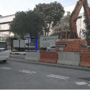

|
Gustavo Salazar, Miguel Saavedra-Ruiz, Victor Romero-Cano LatinX Workshop at CVPR, 2021 (Poster Presentation)
code /
arXiv /
poster
3D object detection of vehicles in the NuScenes dataset using classic Machine learning such as DBSCAN and SVMs.
3D object detection is a problem that has gained popularity among the research community due to
its extensiveset of application on autonomous navigation, surveillance and pick-and-place. Most
of the solutions proposed in the state-of-the-art are based on deep learning techniques and
present astonishing results in terms of accuracy. Nevertheless, a set of problems inherits from
this sort of solutions such as the need of enormous tagged datasets, extensive computational
resources due to the complexity of the model and most of the time, no real-time inference.
This work proposes an end-to-end classic Machine Learning (ML) pipeline to solve the
3D object detection problem for cars. The proposed method is leveraged on the use of frustum
region proposals to segment and estimate the parameters of the amodal 3D bouning box. Here we
do not deal with the problem of 2D object detection as for most of the research community this
is considered solved with ConvolutionalNeural Networks (CNN).
This task is addressed employing different ML techniques such as RANSAC for road segmentation and
DBSCAN for clustering. Global features are extracted out of the segmented point cloud using
The Ensemble of Shape Functions (ESF). Some feature are engineered through PCA and statistics.
Finally, the amodal 3D bounding box parameters are estimated through a SVR regressor.
|
|
|
|
||
|
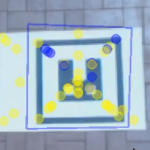
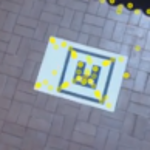
|
Miguel Saavedra-Ruiz, Ana Pinto, Victor Romero-Cano CCRA, 2018 (Oral Presentation)
code /
video /
bibtex
@INPROCEEDINGS{8588112,
author={M. S. {Ruiz} and A. M. P. {Vargas} and V. R. {Cano}},
booktitle={2018 IEEE 2nd Colombian Conference on Robotics and Automation (CCRA)},
title={Detection and tracking of a landing platform for aerial robotics applications},
year={2018},
volume={},
number={},
pages={1-6},
}
Object Detection and tracking pipelines to detect a landing pad on the ground from a UAV.
Aerial robotic applications need to be endowed with systems capable to accurately locate objects of
interest to perform specific tasks at hand. I Developed an embedded vision-based landing platform
detection and tracking system with ROS and OpenCV. The system extended the capabilities of a
SURF-based feature detector-descriptor that makes detections of a landing pad alongside a Kalman
filter-based estimation module. The system demonstrated a considerable improvement over
only-detector methods, diminishing the detection error and providing accurate estimations of the
landing pad position (Implemented in C++/Linux).
|
|
|
|
||
|
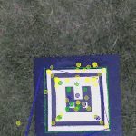

|
Miguel Saavedra-Ruiz, Ana Pinto, Victor Romero-Cano (Poster Presentation) code / poster Localization of a landing pad located at the top of a ground vehicle with a UAV. |
|
{kind=link}
|
|
||


|
Miguel Saavedra-Ruiz Sacha Morin, Liam Paull code (model) / code (servoing) / arXiv / webpage Visual Servoing navigation using pre-trained Self-Supervised Vision Transformers. |
|
|
|
||
|
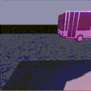
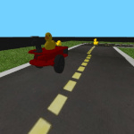
|
Sacha Morin, Miguel Saavedra-Ruiz, Wei Fen code DINO features for object detection and sparse instance segmentation in duckie-town dataset. |
|
|
|
||
|
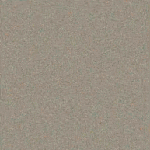
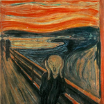
|
Miguel Saavedra-Ruiz, Gustavo Salazar, Sebastian Botero code / report (spanish) Style-transfer implementarion based on the paper A neural algorithm of artistic style using VGG-19.
Implementation of Style-Transfer based on the original paper 'A neural algorithm of artistic style'.
As stated by the authors, style-transfer is 'an artificial system based on a Deep Neural Network
that creates artistic images of high perceptual quality'. In this work we aimed to replicate the
original paper in a Pytorch-based implementation using as backbone a VGG-19 model. The results
present how the implementation is capable to transfer the desired content and style to a different
image and even create an aesthetic result from scratch.
This work was locally deployed using docker-compose and web sockets in order the create a
seamlessly implementation of style-transfer with an intuitive GUI.
|
|
|
|
||
|
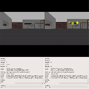
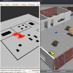
|
Miguel Saavedra-Ruiz code Robot localization, Mapping, SLAM, path planning and navigation.
Implementation of different robotics vision projects. These are based on the robotics
software engineer nanodegree provided by Udacity. All the projects were developed with ROS
and tested in a gazebo-based simulated environment. Different topics were addressed
such as Gazebo basic, ROS, robot localization, Mapping, SLAM, navigation and
path planning. The projects are listed below
* How to use the model and building editor, plugins in Gazebo and more.
* Creating a ball chaser robot in ROS and Gazebo.
* Localization through Kalman Filter, Monte Carlo methods and ACML.
* Occupancy grid map generation, GridBased Fast Slam ROS package and RTAB-Map SLAM.
* The A* algorithm and robot navigation.
|
|
|
|
||
|
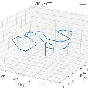
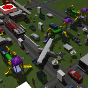
|
Miguel Saavedra-Ruiz code Stereo Visual Odometry and Visual Inertial Odometry pipelines to estimate the pose of a quad-rotor.
Implemented Stereo Visual Odometry and Visual Inertial Odometry pipelines to estimate the pose of a quad-rotor.
The system works by taking subsequent image pairs and matching features throughout the test. Once those features
are obtained, 3d-points coordinates were retrieved with the depth map of the images and the extrinsic camera
calibration matrix. Finally, the trajectory is estimated using 3D-2D Perspective-n-Point (PNP). As an additional
step, the VO trajectory was used with the IMU data in an Error-State Extended Kalman Filter to estimate the pose
even when most of the VO observations were dropped. Both VO and VIO showed good results estimating the trajectory
of the UAV (Implemented in Python/Linux).
|
|
|
|
||
|
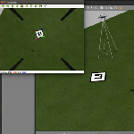
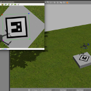
|
Miguel Saavedra-Ruiz code / video Simulation of an autonomous landing system for a UAV with Gazebo, ROS and the Software in the loop provided by PX4.
Simulated an autonomous landing system for a UAV with Gazebo, ROS and the Software in the loop
provided by PX4. The project consisted in the development of different packages in C++ and Python
which allowed the assessment of an autonomous landing system. This robotics simulation allowed the
thoroughly development and evaluation of a landing pipeline for a UAV (Implemented in Python, C++/
Linux).
|
|
|
|
||
|
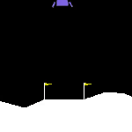
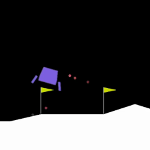
|
Miguel Saavedra-Ruiz code / video Lunar Lander, Mountain Car and Pendulum classical control tasks solved using RL.
Trained a lunar lander in a simulated environment with Reinforcement Learning. The agent was
implemented with the Expected-Sarsa algorithm and used a Neural networkfor for action-values
approximation. The algorithm was capable to do planning steps with experience replay and learn a
policy for the landing of the agent. Thorughout the specialization I implemented different
projects, some of those are listed below.
* Solved a Gridworld city with Dynamic programming to find an optimal policie.
* Implemented a Dyna-Q and Dyna-Q+ algorithms in a changing maze environment to assess the
performance of planning methods in RL.
* Implemented an Average Reward Softmax Actor-Critic algorithm using Tile-coding to solve the
Pendulum Swing-Up continuous problem.
* Solved the Mountain car and Lunar Lander problems.
|
|
|
|
||

|
Miguel Saavedra-Ruiz code / video Teleoperation system for a car-like robot through mathematical modelling.
Mathematical modelling of unmanned groundvehicles (UGV) is a well studied problem in robotics and
essential for the control of a robot. Developed a teleoperation system for a car-like robot. The
system received velocities in the local coordinate frame of the robot and through the inverse
kinematics model of the vehicle these velocity commands were transformed to wheels’ speed and sent
to the vehicle’s motors. This project was embedded in a Raspberry Pi3 to allow the remote control
of the vehicle with a host computer through WIFI (Implemented in C/Linux).
|
|
|
|
||
|
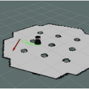
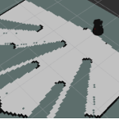
|
Miguel Saavedra-Ruiz slides / report Simulation of a localization and mapping system (laser-based SLAM) for a turtlebot2 in indoors.
Equipping robotic systems with novel localization and navigation stacks is crucial for autonomous
navigation. A localization and mapping system (laser-based SLAM) for a turtlebot2 in indoors was
simulated. The system was capable to accurately localize the robot in a previously mapped
environment and subsequently navigate to a specific position in an occupancy grid map (Implemented
in C++/Linux).
|
|
|
|
||
|
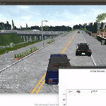
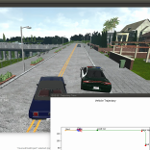
|
Miguel Saavedra-Ruiz video1 / video2 Wheeled-robot mathematical modelling through dynamical modelling (tire model), lateral and longitudinal control, state estimation with Kalman filters, visual perception and motion planning for self-driving vehicles.
This work involved four capstone projects in the area of self-driving cars. Topics such as
wheeled-robot mathematical modelling through dynamical modelling (tire model), lateral and
longitudinal control, state estimation with Kalman filters, visual perception and motion planning
were addressed. Most of the projects were tested in the Carla Simulator to assess performance. A
description of the projects developed are presented below.
* Control of a car-like robot through a longitudinal and lateral controller. The longitudinal
controller was implemented with a PID and the lateral controller was a cross-track error
controller.
* Implementation of an error state extended Kalman Filter for the estimation of the trajectory
of a vehicle. The filter fused information from a GNSS and IMU alongside the dynamic model of
the vehicle to produce an accurate estimation of its trajectory on the space.
* Robotics perception stack which detected the drivable space of the vehicle through image
segmentation. Canny edge detector was used to detect the lines of the road and a depth
representation of the scene was employed to estimate the distance-to-objects in the road and
avoid collision using only image-based methods.
* Implemented a navigation stack in the Carla simulator with the use of grid world
representations and state machines for a simple navigation strategy.
|
|
|
|
||
|
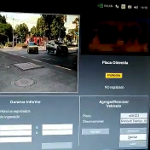
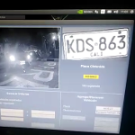
|
Miguel Saavedra-Ruiz Implemented a low-cost license plate recognition systems using deep learning techniques.
Automatic license plate recognition (LPR) is indispensable for the admission and flow control of
vehicles into parking lots orcondominiums. Generally, these systems are based on classic computer
vision techniques owing to their processing speed, however, these approaches can lead to inaccurate
detections and vague performance on non-ideal environmental conditions. My work tried to surpass
these setbacks with the implementation of an image-based plate recognition system using
convolutional neural networks (CNN) to enhance the current methods. The system was optimized and
embedded in a Nvidia Jetson Nano to run in a low-cost computer at a recognition rate of 100ms per
plate making it ideal to operate in the places mentioned before (Implemented in Python, C++,
TensorRT/Linux).
|
|
|
|
||
|
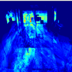
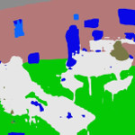
|
Miguel Saavedra-Ruiz Heat map generator based on computer vision techniques to stochastically estimate the most visited areas in an indoor space with a monocular camera.
Implemented a heat map generator based on computer vision techniques to stochastically estimate the
most visited areas in an indoor space with a monocular camera. A feature tracker method was used to
estimate the average flow of persons and a deep convolutional neural network was employed to obtain
the segmentation of the floor in the scene. This information was merge together to gather relevant
information about the people habits in shopping centers or crowded areas (Implemented in Python/
Linux)
|
|
|
|
||

|
Miguel Saavedra-Ruiz Implementation of a low-cost Calendula flower classification system using CNN.
Implemented a low cost Calendula flower classification system with Tensorflow, Android Studio and
Arduino. The system used a deep convolutional neural network inception v3 trained with different
Calendula flowers. When the system detected a Calendula flower, it sent a signal to an Arduino
board and moved a servomotor to a specific point which allowed the correct classification of the
flowers through a transportation band (Implemented in C, Python/Linux).
|
|
|
|
|
Updated March 20th 2022 |